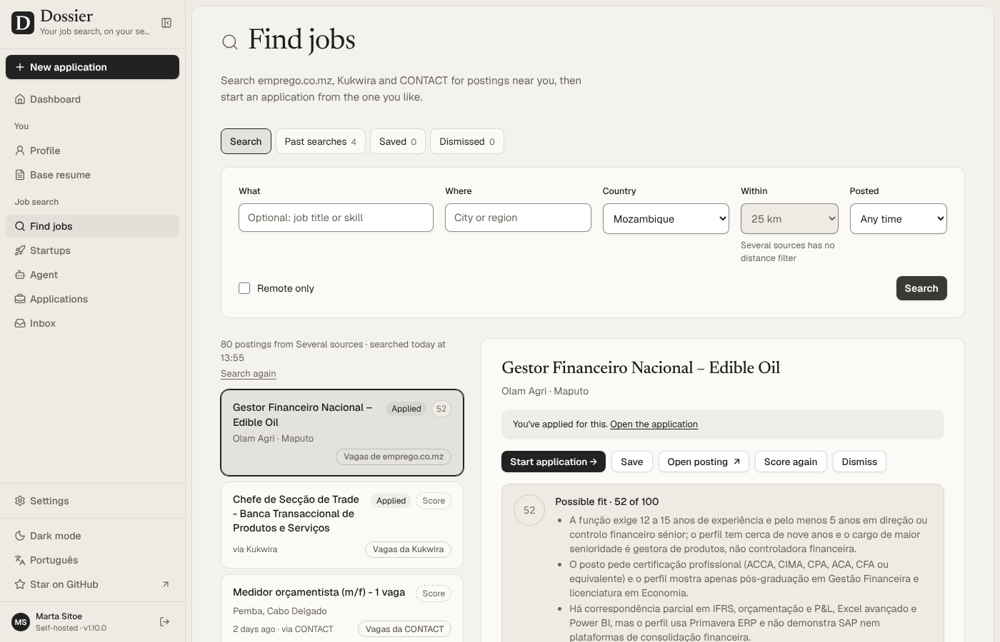
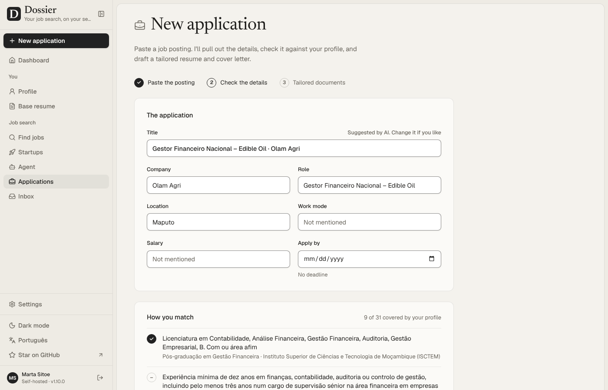
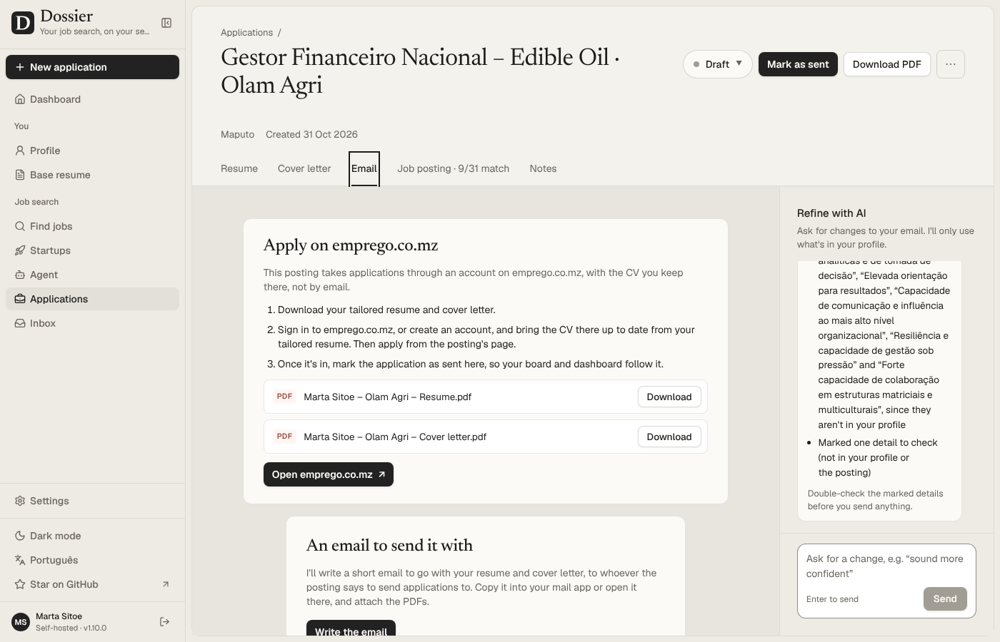
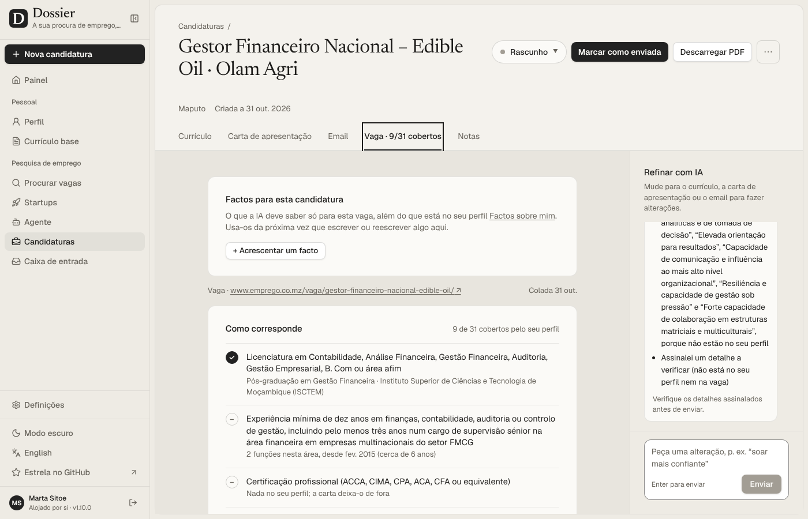
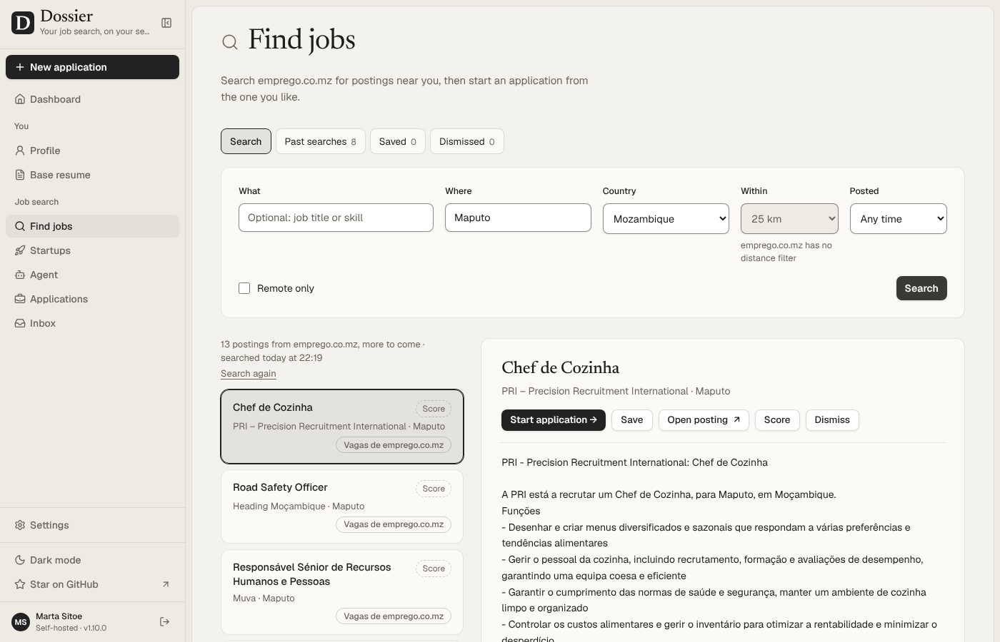
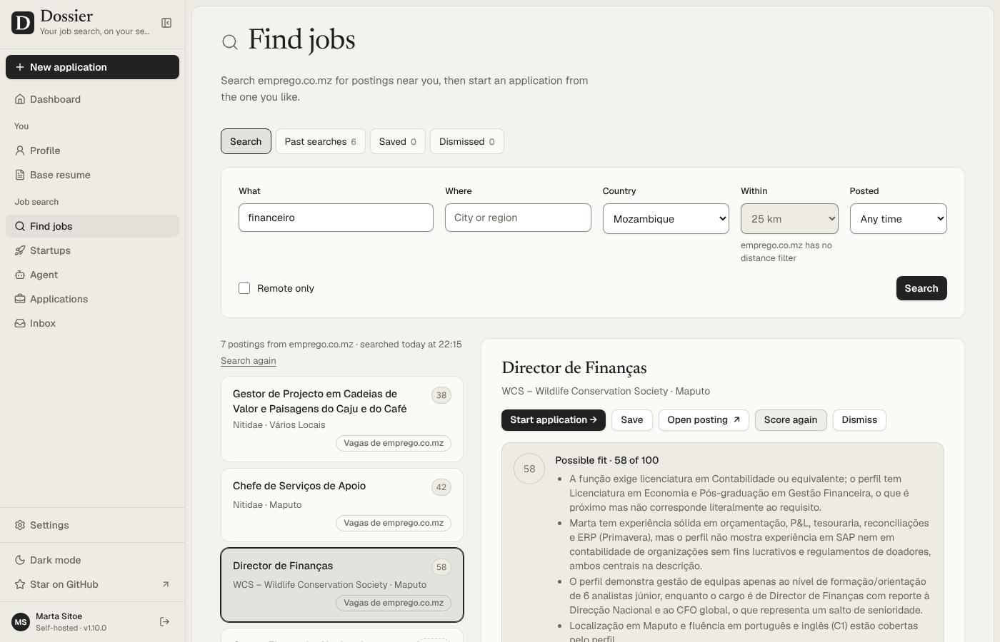
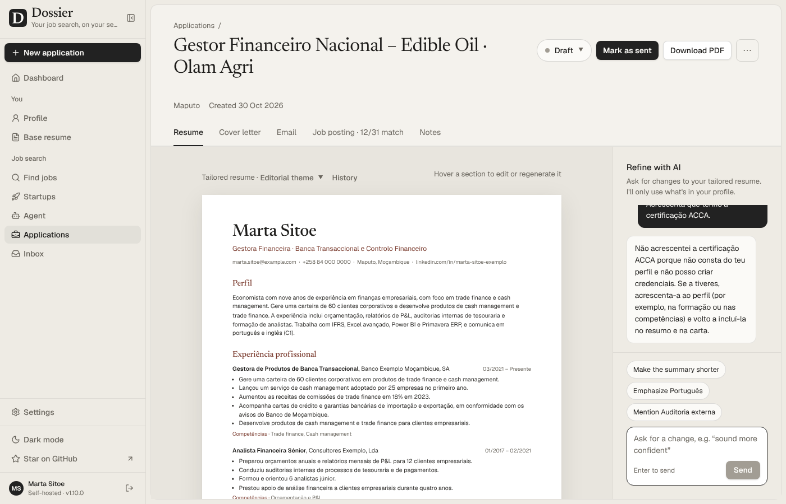
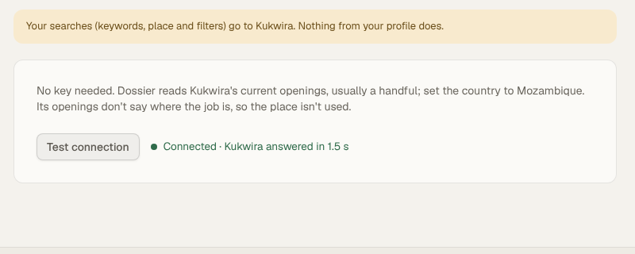
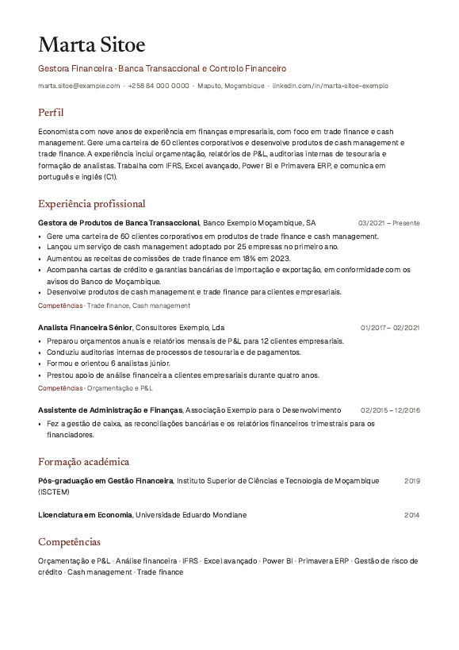
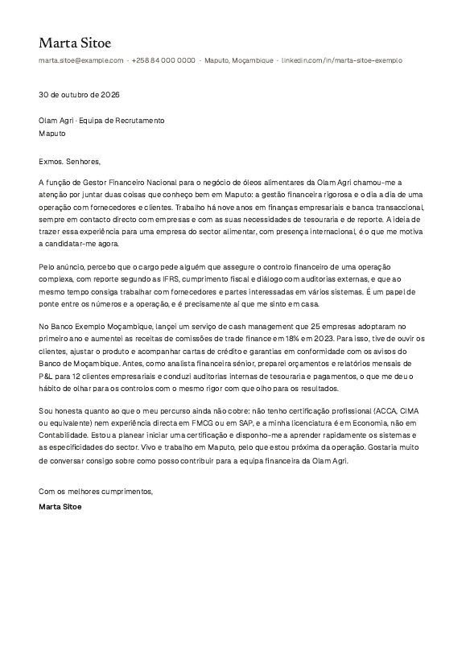

O que o Dossier entrega para procurar emprego em Moçambique: o teste com vagas reais e IA real, o que foi corrigido, as recomendações que foram implementadas a seguir e o que ainda depende de si.
O Dossier funciona de ponta a ponta com vagas moçambicanas reais, e as recomendações da primeira versão deste relatório estão feitas. Pesquisa o emprego.co.mz, o Kukwira e a CONTACT ao mesmo tempo, pontua as vagas com razões em português, reconhece cursos e conta a experiência por área. Escreve currículo e carta em português europeu, sem lacunas nem planos inventados quando assim escolher, e diz onde se candidatar quando a vaga não aceita email. A interface pode estar toda em português.
Depois dos 7 defeitos da primeira ronda, foram 14 commits novos no ramo mz, todos testados e enviados. Ficam três coisas que só o utilizador pode fazer:
MOCAMBIQUE.md);Todas as recomendações da primeira versão deste relatório foram feitas no ramo mz, cada uma com os seus testes. As três que dependem de contas suas ficaram preparadas: falta só a chave ou a decisão.
| Commit | Recomendação | O que ficou | Estado |
|---|---|---|---|
| beecb7d | Pesquisa em várias fontes ao mesmo tempo | Nova fonte "Várias fontes": junta emprego.co.mz, Kukwira e CONTACT (e, se quiser, JSearch, Adzuna e FreeHire). Cada vaga guarda a sua fonte. O agente diário também a usa. | feito |
| c5d4003 | Formação e experiência por área | Os requisitos de formação comparam-se com os cursos do perfil ("Licenciatura em Economia · Universidade Eduardo Mondlane"). Os anos de experiência contam só as funções da área pedida. | feito |
| d00c602 | Lacunas na carta e guarda de factos | Definições → Documentos → "Lacunas na carta de apresentação": referir as importantes com honestidade, ou deixá-las de fora. A carta nunca anuncia planos ("estou a concluir…"). O guarda de factos apanha planos, credenciais e números por extenso em português. | feito |
| f28f346 | Razões da pontuação na língua dos documentos | As razões saem sempre na língua escolhida para os documentos. | feito |
| a7cec7b | "Candidatar no site" | Quando a vaga não dá email, o separador Email mostra "Candidatar-se em emprego.co.mz" (ou no site do formulário), com os passos, os PDF a anexar e o link. | feito |
| 0f4bbd5 | Adaptador para o contact.co.mz | Fonte "CONTACT": lista as ofertas, filtra por palavras e local, lê o texto completo. Ignora a "Candidatura Espontânea". | feito |
| 0fd7b8e | Interface e datas em português | Botão "Português" na barra lateral. Cerca de 1 800 textos e padrões em português europeu, com datas ("sáb. 31 out., 13:14"), países e plurais. Os ecrãs originais não foram tocados, por isso as novidades do projeto original continuam a entrar sem conflitos. | feito |
| beecb7d c8db36f | Aviso do Kukwira e esconder Startups | O aviso diz que as palavras-chave ficam no servidor (o filtro é local). "Mostrar Startups no menu" desliga o separador. | feito |
| 42ff732 | Preencher os formulários do Kukwira e da CONTACT | Seletor no cartão "Candidatar-se em …" com três modos: Assistente (cada valor do formulário a partir do perfil, com Copiar), Favorito (escreve os valores na página do formulário, no navegador, sem enviar nada ao Dossier) e Enviar daqui, só para o Kukwira: mostra tudo o que vai, exige aceitar a política de privacidade, envia o formulário com o currículo adaptado como CV e a carta como mensagem, e marca a candidatura como enviada. A CONTACT (Workable) não tem envio automático: o formulário verifica que é uma pessoa a preencher. Os dados que os formulários pedem e o perfil não tem (género, estado civil, local de nascimento, código postal, nacionalidade) guardam-se uma vez, no seu servidor. | feito não testado com o Kukwira real |
| 48060a7 48c742e 90d0ea3 | Afinações da tradução | Listas de nomes ("emprego.co.mz, Kukwira e CONTACT"), notas da correspondência ("2 funções nesta área, desde fev. 2015"), níveis de língua e contagens ("9 de 31"), encontrados ao rever as páginas em português. | feito |
| 3000cd6 | Teste instável encontrado na verificação | "Mover um cartão com o teclado" falhava 1 vez em 3 a 6: o teste carregava Enter antes de o React estar pronto. Agora espera por ele e passou 10 vezes em 10. O tradutor também deixou de carregar quando a interface está em inglês. | corrigido |
| 6e16141 | JSearch em Moçambique | Teste ao vivo pronto (JOBS_LIVE=jsearch-mz), mais testes ao vivo dos três sites moçambicanos, que já passam. Guia em MOCAMBIQUE.md. | falta a chave |
| 6e16141 | Gmail e Calendar | Passo a passo em português em MOCAMBIQUE.md. O código já existia no Dossier. | falta o cliente OAuth |
| 5 ramos | Contribuições ao projeto original | Cinco ramos upstream/… no seu fork, cada um a partir do main, a passar tipagem, lint e testes. Os pull requests para o AienTech/dossier ficam à sua decisão. | falta a sua decisão |
A 31 de outubro, a mesma aplicação de produção correu com as novidades, contra os três sites reais e a DeepSeek, com o mesmo perfil fictício.
| Passo | Resultado | Tempo |
|---|---|---|
| Várias fontes ao mesmo tempo | ||
| Escolher "Várias fontes" e testar a ligação | passa emprego.co.mz, Kukwira e CONTACT responderam em 5,2 s | 6,1 s |
| Pesquisar Moçambique sem palavras-chave | passa 80 vagas abertas: 55 do emprego.co.mz, 24 da CONTACT e 1 do Kukwira, cada uma com a sua fonte | 2,2 s |
| Abrir uma oferta real da CONTACT | passa "Medidor orçamentista (m/f)", em Pemba: 4 119 caracteres de texto | 2,1 s |
| Agente diário com "Várias fontes" | passa 7 vagas de "financeiro" encontradas, todas já pontuadas na véspera, por isso nenhuma repetida | 3,5 s |
| Pontuação e correspondência | ||
| Pontuar uma vaga do emprego.co.mz | passa 52 em 100, com as razões em português: "A função exige 12 a 15 anos de experiência…" | 4,2 s |
| Requisito de formação | passa "Licenciatura em Contabilidade… ou área afim" coberto pela "Pós-graduação em Gestão Financeira · ISCTEM" | 10,8 s |
| Anos de experiência numa área | passa contados só nas funções da área: "2 funções nesta área, desde fev. 2015 (cerca de 6 anos)" | — |
| Carta e candidatura | ||
| Definições: lacunas deixadas de fora | passa e cada lacuna diz "a carta deixa-a de fora" | 2,6 s |
| Carta para a Olam Agri | passa sem parágrafo de lacunas e sem planos ("estou a concluir…"); números do perfil intactos | 9,2 s |
| Guarda de factos | 1 aviso a mais assinalou "Óleo", a tradução de "Edible Oil" do título da vaga | — |
| Separador Email de uma vaga do emprego.co.mz | passa "Candidatar-se em emprego.co.mz", com os 3 passos, os 2 PDF e o link | 0,7 s |
| Interface em português | ||
| Painel, Procurar vagas, Agente, Candidatura | passa "Boa tarde, Marta", "Já enviou 3 candidaturas", "Criada a 31 out. 2026"; só ficam em inglês nomes próprios e o que o utilizador escreveu | ≈3 s cada |
Dois passos falharam à primeira por erro do meu script, não do Dossier: um lia a dica da página em vez do resultado do teste de ligação, outro lia a lista da pesquisa anterior. O agente recusou correr à mão porque já tinha corrido nessa hora, como deve; recuei a hora na base de testes para o poder ver.




A versão de produção do Dossier correu nesta sessão com uma base de dados própria, ligada à DeepSeek e aos sites reais. Um navegador automático fez o percurso de um candidato, a partir do CV em PDF de uma gestora financeira fictícia. O perfil foi escolhido para encaixar em vagas abertas hoje: Director de Finanças (WCS), Gestor Financeiro Nacional (Olam Agri) e a oferta de banca transaccional do Kukwira.
A coluna "1.ª vez" diz o que aconteceu antes das correções. "Guião" é um erro do meu script de teste, não do Dossier.
| Passo | Resultado | Tempo | 1.ª vez |
|---|---|---|---|
| 1 · Configuração e perfil | |||
| IA a partir das variáveis do ambiente (DeepSeek) | passa responde em 1 s | 2,3 s | corrigido o servidor recusava deepseek |
| Documentos em "Portuguese (European)" | passa | 1,9 s | novo só havia português do Brasil |
| Ligação ao emprego.co.mz real | passa responde em 1,3 s | 2,7 s | guião |
| Importar o CV em PDF | passa 3 cargos, 2 formações, 9 competências, 3 línguas; nada inventado | 4,7 s | — |
| Formulário preenchido a partir do perfil (país "Moçambique") | passa | 0,3 s | — |
| Primeira visita: Maputo e Moçambique, sem cargo | passa 13 vagas à primeira | 2,2 s | corrigido o cargo do perfil dava 0 vagas |
| 2 · Procurar vagas no emprego.co.mz | |||
| Maputo, sem palavras-chave (página da cidade) | passa 13 vagas abertas, com mais páginas | 2,6 s | corrigido o campo "What" era obrigatório |
| Sem nada (página principal) | passa 67 vagas | 1,6 s | corrigido |
| Palavra "financeiro" / "finanças" / "engenheiro" | passa 7 / 4 / 0 vagas abertas (as de "engenheiro" estavam todas expiradas) | ≈2 s | — |
| Texto completo de uma vaga, lido da página dela | passa 4 684 caracteres | 0,9 s | — |
| Pontuar 3 vagas reais com a IA | passa 38, 42 e 58 em 100, com razões coerentes | 3–5 s | — |
| 3 · Candidatura a uma vaga real: Gestor Financeiro Nacional, Olam Agri | |||
| Iniciar a partir da vaga | passa 14 757 caracteres de vaga e o link | 2,6 s | — |
| Ler a vaga e comparar com o perfil | passa 12 de 31 requisitos cobertos | 7,4 s | — |
| Currículo e carta adaptados | passa currículo de 2 páginas, carta de 1 | 9 s | — |
| Português europeu, sem marcas do Brasil | passa "equipa", "contacto", "gestão"; "Exmos. Senhores," | — | — |
| Guarda de factos | passa 0 avisos; ver "Qualidade" abaixo | — | — |
| Pedir no chat um resumo mais curto | passa | 2,4 s | — |
| Pedir no chat uma certificação ACCA que não existe | passa recusou e explicou porquê | 4,9 s | — |
| PDF do currículo e da carta | passa 107 KB e 63 KB | ≈1 s | ambiente faltava o Chromium do servidor |
| Email da candidatura | passa sem destinatário: a vaga não dá endereço, e o Dossier não inventa um | 4,9 s | — |
| Mudar o estado para "Sent" | passa | 1,9 s | — |
| 4 · Kukwira: oferta real de banca transaccional | |||
| Ligação ao site real, com o certificado em falta incluído | passa responde em 1,5 s | 3,4 s | guião |
| Listar as ofertas e iniciar a candidatura | passa 1 oferta aberta | 3,8 s | corrigido o servidor cortou a ligação (ECONNRESET) |
| Correspondência, currículo, carta, chat, PDF, email, estado | passa os 9 passos | ≈30 s | corrigido a carta tratava o Kukwira como o banco |
| 5 a 7 · Links colados, agente diário e erros | |||
| Colar o link de uma vaga do emprego.co.mz | passa 14 697 caracteres, sem menus do site | 2,3 s | corrigido trazia só 200 caracteres |
| Colar o link de uma oferta do Kukwira | passa 1 743 caracteres | 3,2 s | corrigido o link é o da aplicação, não o da oferta |
| Agente diário: "financeiro" em Moçambique | passa 6 vagas pontuadas com o texto completo (3,5 a 11 mil caracteres); máximo 62, abaixo do mínimo de 70 | 22,9 s | corrigido pontuava só o excerto |
| País que a fonte não cobre (Portugal) | passa "emprego.co.mz doesn't list jobs in Portugal." | 0,3 s | — |
| Cidade sem página no emprego.co.mz | passa "No open postings in Cidade Inexistente right now." | 0,7 s | guião |
| JSearch (LinkedIn via Google) sem chave | passa "Add your JSearch key in Settings → Job search first." | 2 s | — |






Cada correção é um commit com os seus testes, e todas estão no ramo mz do fork (git pull origin mz). Os commits marcados como candidatos a proposta ao autor também servem o projeto original. Propô-los ajuda a que o fork não se afaste demasiado.
| Commit | O que muda | Proposta ao autor? |
|---|---|---|
| 90b3643 | O agente diário pontua as vagas com o texto completo. Antes pontuava só o excerto, que no emprego.co.mz é uma frase e no Adzuna o início da vaga. | Sim, afeta o Adzuna |
| 0ece0b1 | Nova língua de documentos "Portuguese (European)": Contacto, Equipa, Intermédio, "Exmos. Senhores,". O "Portuguese" existente continua a ser o do Brasil. | Sim |
| 28a5ee9 | DOSSIER_AI_PROVIDER=deepseek é aceite e aponta para https://api.deepseek.com. | Sim |
| 014cb34 | O emprego.co.mz e o Kukwira pesquisam sem palavras-chave: a página de uma cidade ou as vagas mais recentes. O formulário exigia sempre o campo "What". | Em parte (a opção browses) |
| 117ba26 | Colar um link do emprego.co.mz ou do Kukwira usa o leitor do adaptador: 14 697 caracteres em vez de 200. | Não, é específico |
| 6b58d6e | O Kukwira volta a tentar uma vez quando o servidor corta a ligação; com tempo esgotado não repete. | Não |
| 1d14680 | Testes de ponta a ponta das duas fontes, com páginas falsas no formato real. | Não |
| 657da4e | As ofertas do Kukwira deixam de ter "Kukwira" como empresa e dizem à IA que é uma agência de recrutamento e que o cliente não é identificado. | Não |
| 54df4f7 | Com o emprego.co.mz ou o Kukwira, a primeira pesquisa parte da cidade e do país do perfil, sem o cargo: 13 vagas em vez de 0. | Em parte |
Os números do CV (60 clientes, 25 empresas, 18% em 2023, 12 clientes, 6 analistas) chegaram intactos ao currículo e à carta, e nenhum cargo ou formação foi inventado. Com o pedido explícito de acrescentar a certificação ACCA, a IA recusou e explicou que não consta do perfil.
Com a língua nova, currículos e cartas saíram na norma europeia ("equipa", "contacto", "gestão", "adoptado"), sem marcas do português do Brasil. O chat responde no mesmo registo.
Na primeira ronda, a carta para a Olam Agri enumerava o que falta ("não tenho certificação ACCA, CIMA… nem experiência em SAP") e anunciava "Estou a planear iniciar uma certificação", uma intenção que não está no perfil. Agora pode escolher "Deixá-las de fora": na segunda ronda a carta para a mesma vaga não tem parágrafo de lacunas nem planos. Em qualquer modo, a IA é instruída a nunca anunciar planos, e o guarda de factos passou a apanhá-los.
Na primeira ronda só se comparavam competências e línguas: "Licenciatura em Gestão, Finanças, Economia ou áreas afins" aparecia como não coberta, e "5 anos em banca transaccional" contava toda a experiência desde 2015. Agora a formação compara-se com os cursos do perfil, e os anos contam só as funções da área pedida. Na segunda ronda, a licenciatura pedida ficou coberta pela pós-graduação do perfil, e os "dez anos em finanças com supervisão" contaram cerca de 6 anos em 2 funções, em vez de 11.
As razões das pontuações saem agora sempre na língua dos documentos, e a interface pode estar toda em português europeu, datas incluídas. Os textos que o Dossier original acrescentar no futuro aparecem em inglês até serem acrescentados ao dicionário.
Na segunda ronda, a carta traduziu "Edible Oil" do título da vaga para "Óleo Alimentar", e o guarda de factos assinalou "Óleo" porque não está escrito assim na vaga. É inofensivo: basta confirmar e seguir.
As recomendações estão feitas. O que fica depende sobretudo de contas e decisões suas.
| Prio. | O quê | Quem | Como |
|---|---|---|---|
| P1 | Chave do JSearch, para ver quantas vagas do LinkedIn e de outros sites aparecem em Moçambique | Você | Plano gratuito da OpenWeb Ninja (200 pesquisas por mês). Depois, JOBS_LIVE=jsearch-mz mede Maputo; se valer a pena, junte-o às Várias fontes. |
| P1 | Experimentar "Enviar daqui" com uma vaga real do Kukwira | Você | Foi testado só com um servidor falso do formato do Kukwira (144 testes de ponta a ponta). Se o site real recusar, a mensagem vem dele e ajusta-se. O favorito no Workable da CONTACT também não foi visto num formulário real. |
| P1 | Cliente OAuth Google, para Gmail e Calendar | Você | Passos em MOCAMBIQUE.md e em Definições → Google. |
| P1 | Propor ao projeto original as 5 melhorias genéricas | Você decide; eu abro os pull requests | Ramos upstream/agent-whole-text, pt-pt-documents, score-reasons-language, letter-gaps e apply-on-site, já no seu fork. |
| P2 | Alojamento | Você | Servidor com HTTPS (o Google exige-o fora de localhost), PostgreSQL 18 e cópias de segurança. O compose.production.yml já traz o essencial. |
| P2 | Enviar ao Kukwira a mensagem sobre o certificado | Você | O texto está pronto. O Dossier já contorna o problema. |
| P3 | Verificar os sites moçambicanos de vez em quando | Você ou uma tarefa agendada | JOBS_LIVE=mozambique: se um site mudar as páginas, este teste falha antes de a pesquisa ficar vazia. |
| P3 | Traduzir os textos novos do original | Fork | Ao trazer novidades do original, acrescentar os textos novos a src/lib/i18n/pt-PT.ts. |
MOCAMBIQUE.md, na raiz do ramo mz, explica o que o fork acrescenta e como configurar tudo..env: DOSSIER_AI_PROVIDER=deepseek, DOSSIER_AI_MODEL=deepseek-flash, a chave em DOSSIER_AI_KEY, DOSSIER_JOBS_SOURCE=multi e DOSSIER_INTERFACE_LANGUAGE=pt-PT. Nas Definições → Documentos, escolha "Português (europeu)" e o que a carta faz com as lacunas.deepseek-flash ou deepseek-v4-pro. O valor que está no ambiente, "DeepSeek V4.1-Flash-1017", é recusado.compose.yml já o traz). Os testes correram sem problemas em PostgreSQL 16.git fetch upstream e git merge upstream/main no ramo mz. Como o ramo já está publicado, juntar é mais seguro do que reescrever o histórico.